Объяснить новый сценарий
Упаковку не выбрасывают, а возвращают в следующий цикл.
WOLFART Design
Графический и веб-дизайн · UX/UI · Коммуникационный дизайн
04 / Самостоятельный концептуальный проект · 2026
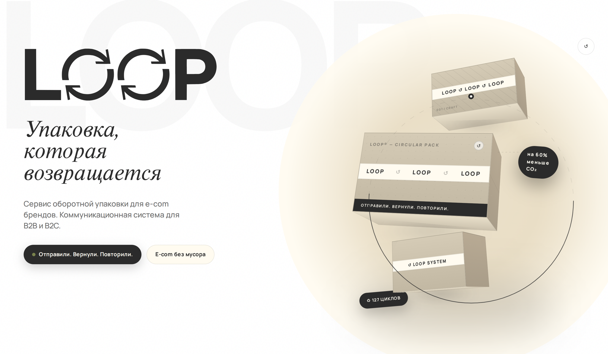
Айдентика · Упаковка · Веб · Коммуникация
Концептуальный проект WOLFART Design. Показатели и цитата на макетах относятся к демонстрационному сценарию.
01 / О проекте
LOOP превращает упаковку из одноразового расходника в часть сервиса. Дизайн делает этот цикл понятным брендам и покупателям — от первого контакта до возврата коробки.
Упаковку не выбрасывают, а возвращают в следующий цикл.
Петля становится знаком, паттерном, иллюстрацией и языком интерфейса.
Айдентика, упаковка, B2B-лендинг, B2C-сценарий и карусель для социальных сетей.
02 / LOOP
Вместо финальной точки после доставки — возвращение и следующий оборот.
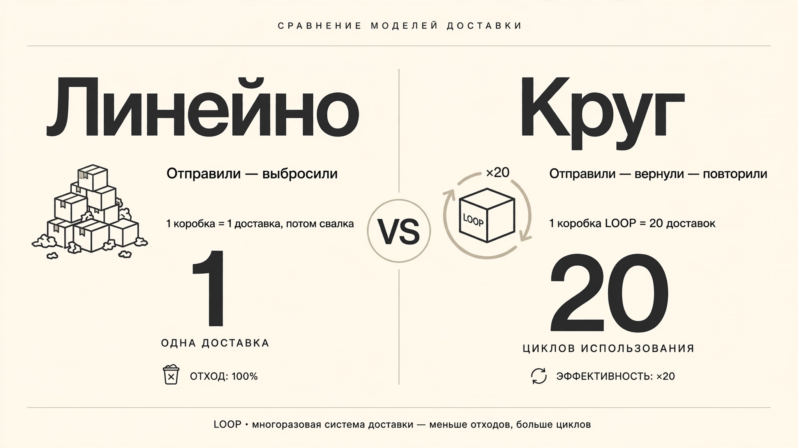
Одноразовая упаковка заканчивает путь после доставки. В концепции LOOP возврат становится частью следующего цикла.
03 / LOOP
Бренды и покупатели участвуют в одном процессе, но приходят к нему с разными вопросами.
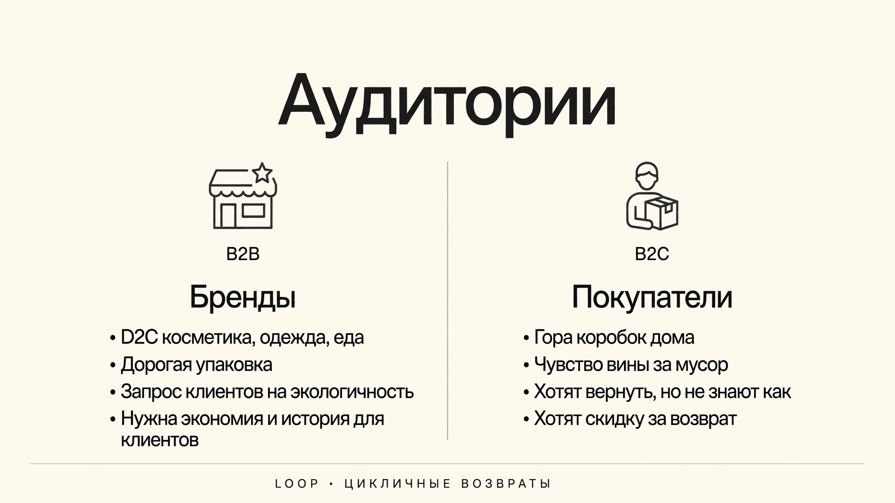
Брендам нужен понятный процесс внедрения. Покупателям — простой сценарий возврата коробки.
04 / LOOP
Логотип, цвет и паттерн строятся вокруг возвращения и продолжаются на каждом носителе.
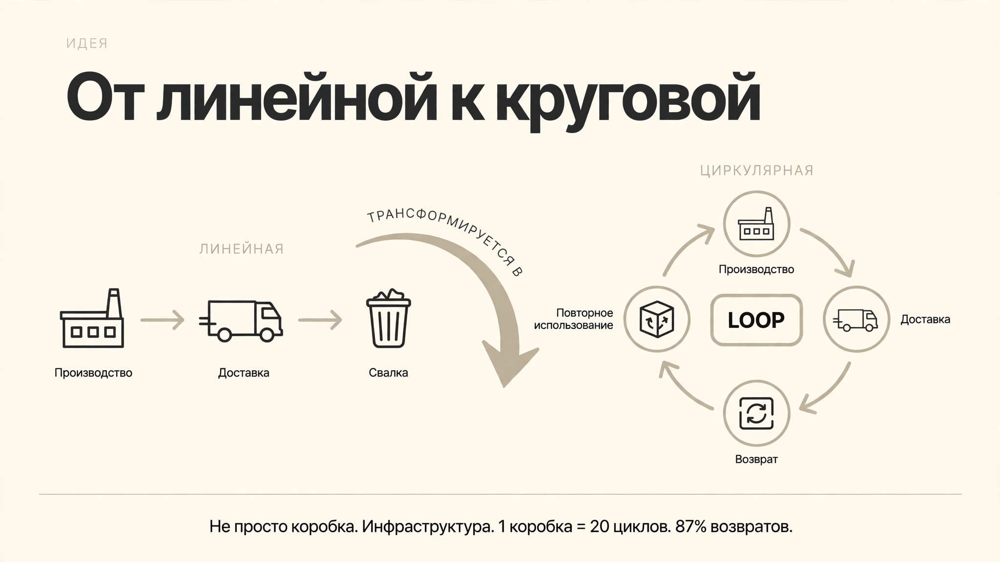
Возвращение становится главным действием и объединяет визуальную систему.
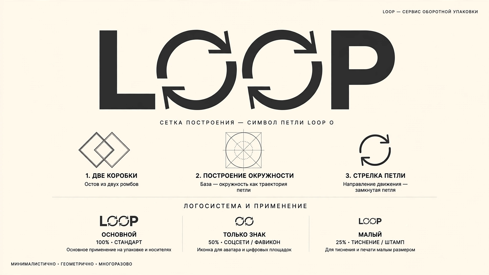
Две «О» превращаются в круговые стрелки. Петля становится основой знака.
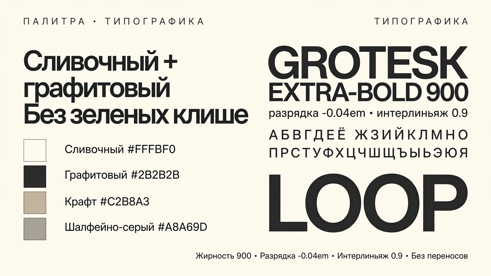
Крафт, графит, сливочный и лайм связывают упаковку и цифровые носители.
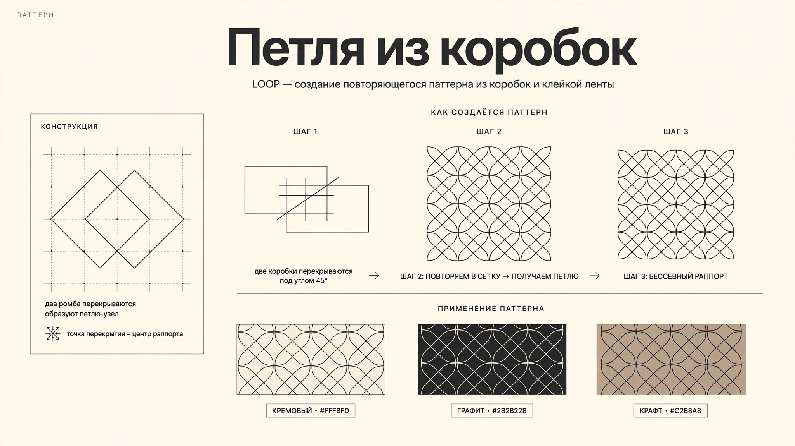
Модульный паттерн продолжает круговое движение логотипа.
05 / LOOP
B2B-лендинг показывает логику сервиса и сценарий знакомства с моделью оборотной упаковки.
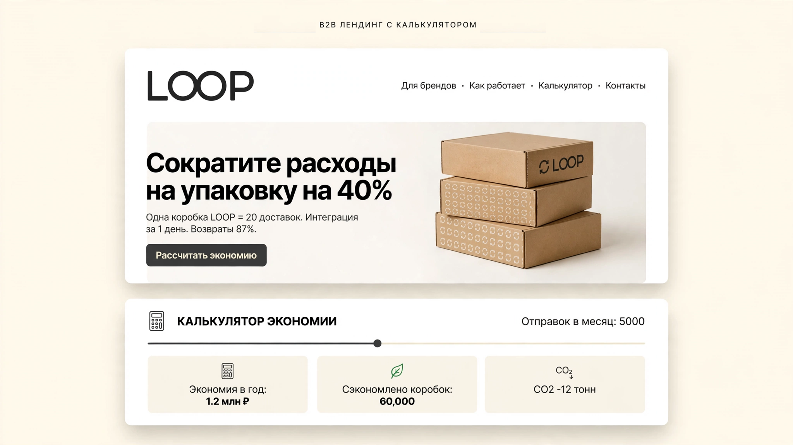
Демонстрационный лендинг объясняет модель сервиса и показывает пример калькулятора.
06 / LOOP
Сценарий возврата превращает идею в последовательность понятных действий.
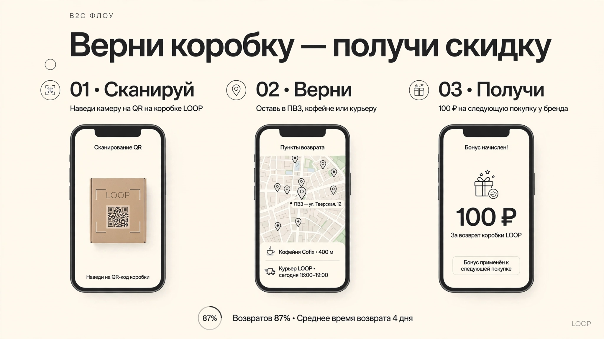
Последовательность шагов показывает покупателю, как упаковка возвращается в цикл.
07 / LOOP
Знак, лента и вкладыш помогают узнавать сервис и поддерживают сценарий возвращения.
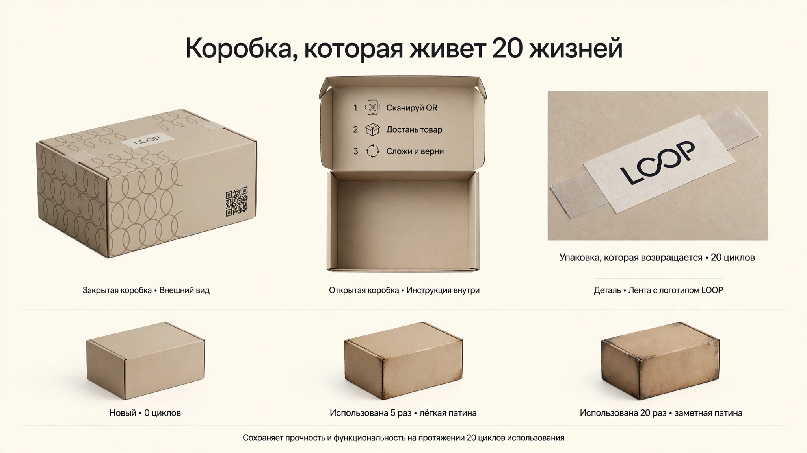
Коробки, лента, стикеры и вкладыши поддерживают одну коммуникационную систему.
08 / LOOP
Один принцип связывает рекламу, упаковку и интерфейс.
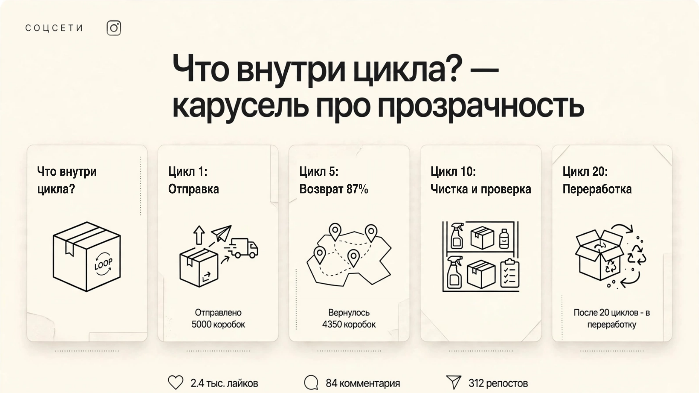
Карусель для социальных сетей разворачивает историю возвращения в последовательность сообщений.
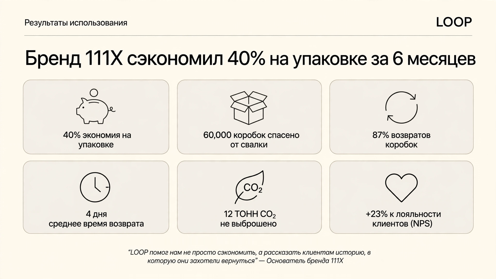
Цифры и цитата в макете иллюстрируют концепцию, а не результаты действующего сервиса.
Отправили. Вернули. Повторили.
LOOP — дизайн-система, в которой знак, упаковка и интерфейс рассказывают одну историю: возвращение становится частью сервиса.